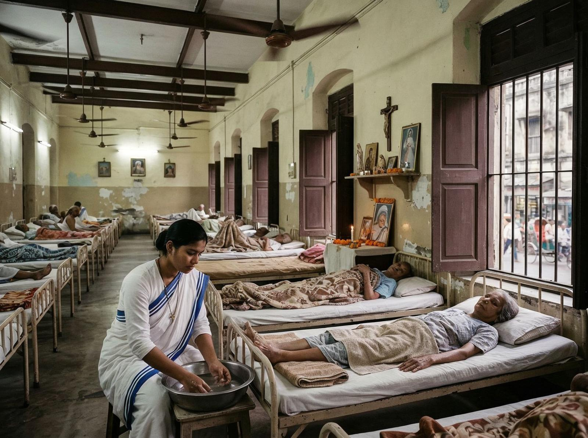
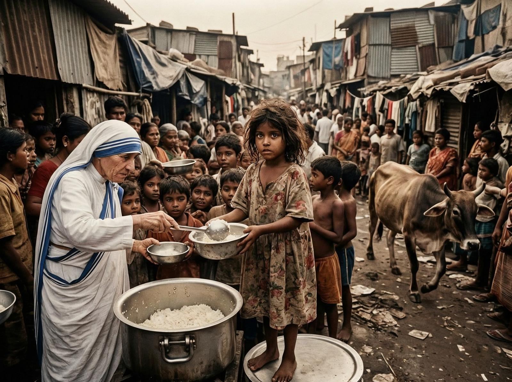

În 1928, o tânără albaneză a plecat din Macedonia spre India. Își propunea să devină misionară, să ajute pe cei care au nevoie, să servească pe cei mai vulnerabili. Se numea Agnes Gonxha Bojaxhiu, dar lumea urma să o cunoască drept Mother Teresa.
Tensiunea centrală a vieții ei a fost lupta între credință și durere. A văzut săracii din Calcutta — oameni care mureau pe stradă, care nu aveau mâncare, care nu aveau apă, care nu aveau speranță. A decis să îi ajute, să îi îngrijească, să le ofere demnitate.
A creat Misericordia, o organizație care îngrijește săracii, bolnavii, morții. A deschis centre în India, apoi în întreaga lume. A devenit un simbol al milosteniei, al compasiunii, al iubirii.

A primit Nobelul pentru Pace în 1979, dar nu a acceptat banchetul. A cerut ca banii să fie donați săracilor din India.
Un aspect pe care hagiografiile îl ignoră: Mother Teresa a avut și critici. A fost acuzată că nu a oferit tratamente medicale adecvate, că a folosit banii pentru extinderea organizației în loc de a ajuta direct, că a promovat suferința ca un mod de a se apropia de Dumnezeu.
A murit în 1997, la 87 de ani, în Calcutta. A fost canonizată în 2016 de Papa Francisc.

Amintirea ei? Milostenia, compasiunea, complexitatea. O femeie care a dedicat viața săracilor, dar care a avut și critici. O femeie care a demonstrat că credința poate inspira milostenie, că compasiunea poate salva vieți, că o singură persoană poate face o diferență.
Mother Teresa nu a fost doar o sfântă, a fost o femeie complexă cu viziuni, critici, contraste. A demonstrat că sfinții sunt și oameni, că milostenia are limitări, că binele nu e perfect, dar e necesar.